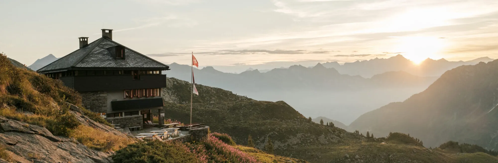
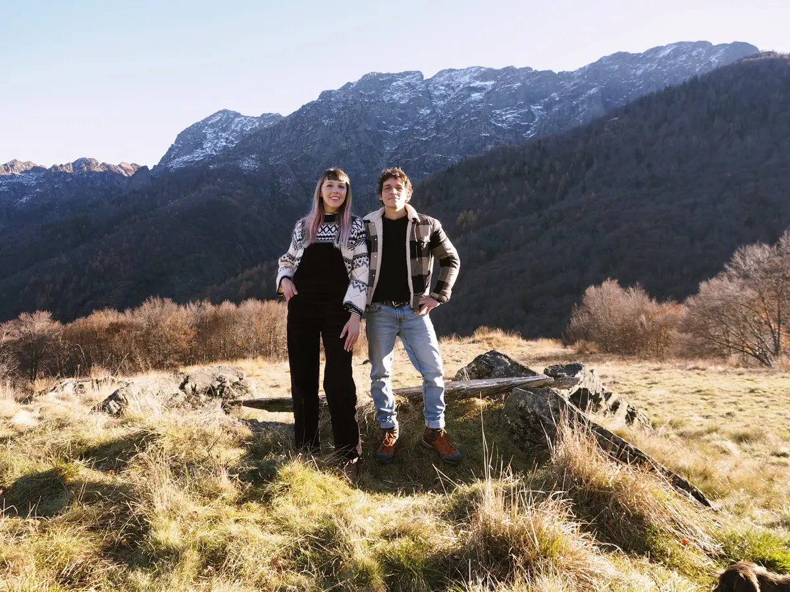
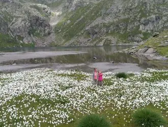
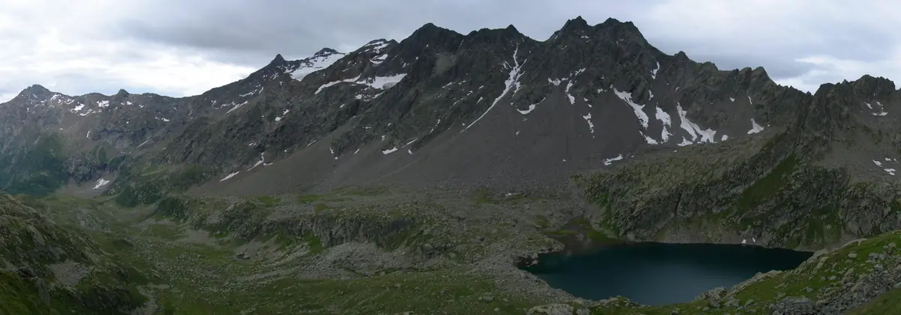
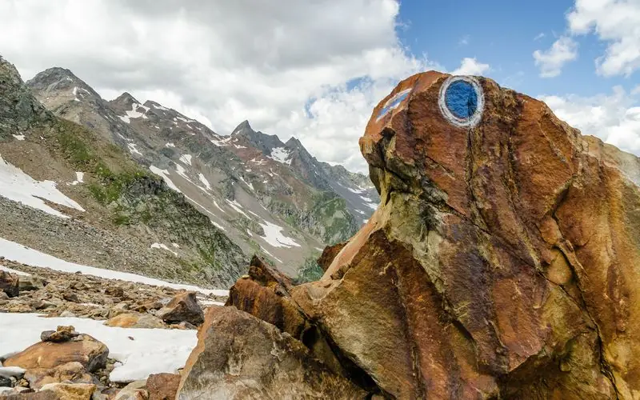
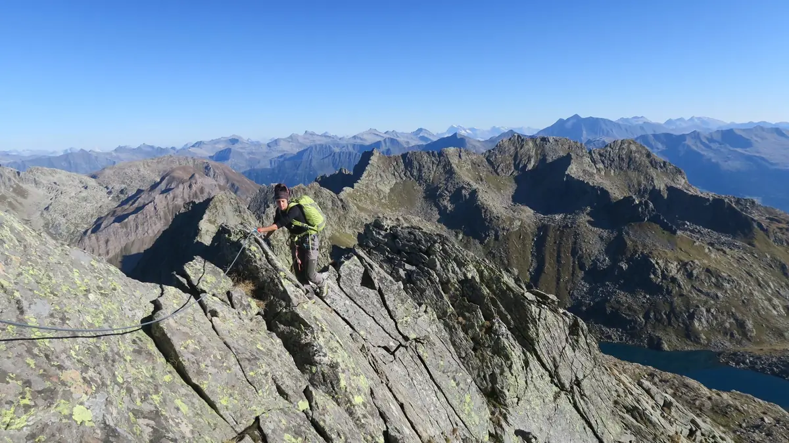
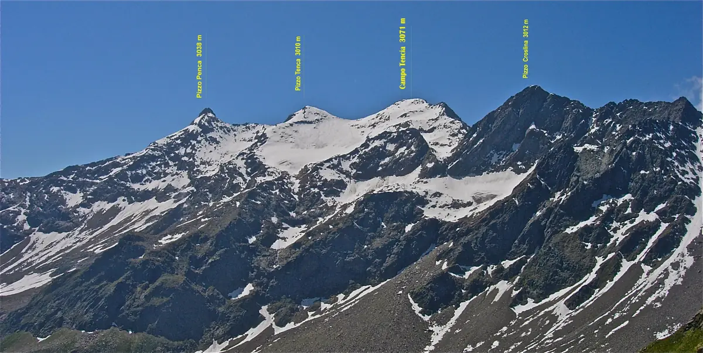
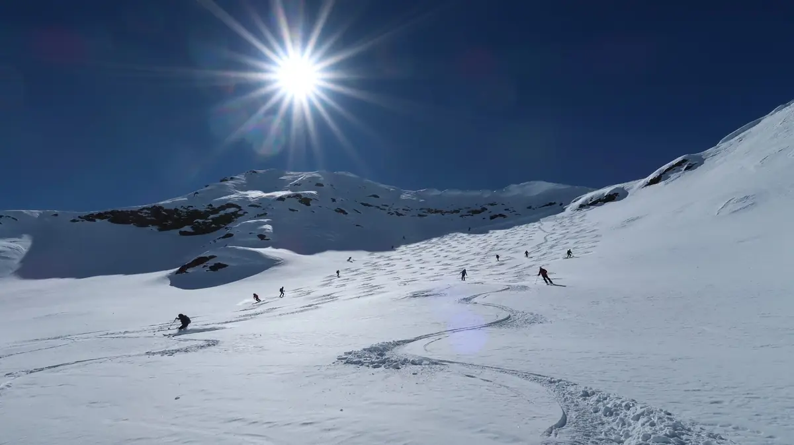
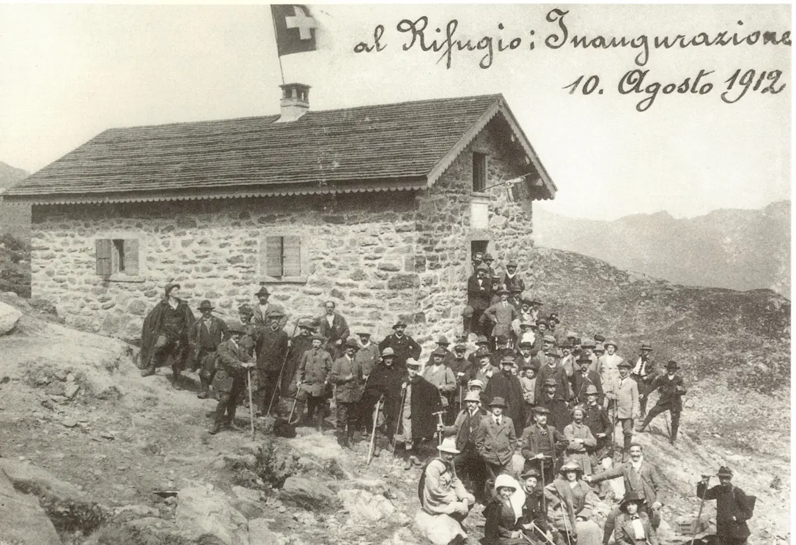

Campo Tencia
Val Piumogna, Léventine
- Altitude
- 2140 m
- Places
- 80
- Gardiennage
- de mi-juin à mi-octobre

Contactez le gardien avant de partir
Vérifiez toujours que le gardien est présent et renseignez-vous sur les conditions en montagne.
- Gardiens
- Valeria Grandi et Paco Porcu
- Téléphone de la cabane
- +41 91 867 15 44
- Portable
- +41 76 721 25 72
- campotencia@casticino.ch
La cabane
Posée sur une terrasse au-dessus du haut Val Piumogna, c’est la base idéale pour des randonnées, des traversées vers d’autres cabanes et des ascensions comme le Pizzo Campo Tencia qui, avec ses 3072 m, est le plus haut sommet entièrement tessinois.
La première cabane des montagnes tessinoises a été construite en 1912 au pied du sommet du même nom, côté Léventine, dans le haut Val Piumogna. C’est un camp de base pour familles, randonneurs et alpinistes : promenades dans la nature, le lac Morghirolo tout proche, les jardins d’escalade et les grandes courses du groupe du Campo Tencia, avec la traversée classique de la Cresta dei Corni.
Le bâtiment actuel, conçu par l’architecte de la section Oscar Hofmann et inauguré en 1977, compte trois niveaux : au rez-de-chaussée l’entrée, le local à chaussures, les toilettes et la cave ; au premier étage une salle commune lumineuse de 70 places et la cuisine ; au deuxième environ 70 places dans 7 dortoirs, certains de 4 à 8 places, idéaux pour les familles.
Les lits ont des duvets ; le sac à viande est obligatoire. La cabane a gardé son caractère des années 1980 : pas de chambres individuelles avec salle de bain ni de sèche-cheveux !
Séjour
- Ouverture
- Toute l’année
- Gardiennage
- De mi-juin à mi-octobre ; en hiver non gardiennée, mais la réservation est obligatoire ; pour les grands groupes, ouverture possible en accord avec les gardiens
- Places
- 80
- Repas
- Plats chauds, servis toute la journée par les gardiens
- Local d’hiver
- Toujours ouvert, avec boissons et bois
La cuisine
Un menu simple et sincère au goût local, mais pas seulement tessinois : assiettes froides de charcuterie et de fromages de la région, soupes, gnocchis frais et polenta avec différents accompagnements, selon la saison et les disponibilités.
Pour les hôtes qui passent la nuit, nous cuisinons des spécialités de la région, avec un menu qui change selon l’occasion, inspiré de la montagne et d’ailleurs.
Végétariens, végans et hôtes avec un régime particulier sont les bienvenus : merci de nous prévenir à temps, pour que nous puissions bien accueillir chacun.
Vos hôtes

Nous aimons nous définir comme des personnes solaires, positives et pleines d’énergie, avec une grande envie de faire et de nous lancer. D’abord gérants d’une osteria avec chambres, nous sommes depuis 2024 les gardiens de la Capanna Campo Tencia.
Nous avons beaucoup voyagé et découvert des endroits merveilleux, mais nous nous sommes aussi rendu compte à quel point il est beau de revenir dans nos montagnes : c’est là que nous nous sentons chez nous. Après de nombreuses expériences de travail et de gestion hôtelière, nous avons entendu l’appel de la montagne, qui nous a poussés à viser plus haut et à réaliser ce rêve.
Pendant la saison, des amis et des bénévoles nous épaulent. Nous nous réjouissons de vous accueillir à la cabane !
Valeria et Paco
Tarifs et réservation
RéserverMembres CAS/FAT et clubs avec droit de réciprocité
Nuitée avec demi-pension (souper et petit-déjeuner)
- Enfants jusqu’à 7 ans
- Fr. 30.–
- Enfants de 8 à 14 ans
- Fr. 45.–
- Jeunes de 15 à 21 ans
- Fr. 58.–
- Adultes dès 22 ans
- Fr. 75.–
- Guides de montagne UIAGM
- Fr. 50.–
Non-membres
Nuitée avec demi-pension (souper et petit-déjeuner)
- Enfants jusqu’à 7 ans
- Fr. 30.–
- Enfants de 8 à 14 ans
- Fr. 50.–
- Jeunes de 15 à 21 ans
- Fr. 63.–
- Adultes dès 22 ans
- Fr. 85.–
Familles et groupes
Rabais en semaine pour les familles (dimanche-jeudi) et offre pour les groupes de jeunes : écoles, scouts, cours J+S (lundi-jeudi)
- Familles : réduction par enfant de moins de 15 ans
- Fr. 5.–
- Groupes : enfants de moins de 15 ans
- Fr. 40.–
- Groupes : jeunes de 15 à 18 ans
- Fr. 45.–
Suppléments
Pour des raisons d’hygiène, le sac à viande est obligatoire
- Pique-nique
- Fr. 12.–
- Thé pour la journée (1 l)
- Fr. 4.–
- Douche (par personne)
- Fr. 5.–
- Sac à viande jetable
- Fr. 7.–
- Réservation obligatoire, en ligne avec le bouton « Réserver ».
- Annulation sans frais jusqu’à 18 h deux jours avant la date réservée.
- Pas de réservations ni de demandes par les réseaux sociaux : pour toute information, appelez-nous.
Accès
En été, la cabane s’atteint facilement à pied, par des sentiers adaptés aux familles ; en hiver à skis depuis Dalpe par le Val Piumogna.
Pour Dalpe : du nord ou du sud par l’A2, sortie Rodi-Quinto ; en transports publics jusqu’à Rodi, puis en CarPostal.
- De Dalpe (1192 m) : 3 h.
- Du lac Tremorgio (1849 m), station supérieure du téléphérique depuis Rodi : 3 h 30.
- De Fusio (Val Lavizzara) par le Passo Campolungo (2318 m) : 6 h.
- En hiver depuis Dalpe : 3 h.
Cartes : carte nationale 1:25 000 feuille 1272 Campo Tencia ; 1:50 000 feuille 266 S Valle Leventina. Itinéraires sur SuisseMobile.
Activités
Pas seulement le Campo Tencia ! Le Val Piumogna est idéal pour vivre la montagne dans toute sa variété et à tout âge : le district franc fédéral, les alpages, le sentier géologique du Campolungo, la cyanite du Forno et les lacs de montagne, rafraîchissants même les jours les plus chauds.
Le massif offre de nombreuses courses : la classique Cresta dei Corni, des ascensions comme le Pizzo Campo Tencia, des traversées vers les cabanes Leìt, Sponda, Barone et Garzonera. La cabane se trouve à mi-chemin de la Via Idra, l’itinéraire de 100 km du col du Nufenen au lac Majeur. Les jardins d’escalade près de la cabane sont idéaux pour des cours avec des enfants et des débutants ; en hiver, il y a des randonnées à skis exigeantes et des cascades de glace.

Randonnées faciles
Sur des sentiers blanc-rouge-blanc, entre alpages, lacs de montagne et le district franc fédéral du Campo Tencia.
En savoir plus
Tour du Piumogna
Une boucle depuis Dalpe par les cabanes Leìt et Campo Tencia, à travers une zone protégée riche en fleurs.
En savoir plus
Randonnée alpine
Hors des sentiers battus : les sommets du Campo Tencia, du Forno et du Campolungo, dès T4.
En savoir plus
Cresta dei Corni
Ni randonnée ni alpinisme : la traversée aérienne d’arête du Passo Morghirolo au Campo Tencia.
En savoir plus
Pizzo Campo Tencia et Pizzo Croslina
La plus haute pyramide de roche et de glace du Tessin et le géant qui domine la cabane.
En savoir plus
Escalade
Des jardins d’escalade à quelques minutes de la cabane, du III au 6b : idéal pour apprendre.
En savoir plus
En hiver
Des randonnées à skis exigeantes, loin des destinations connues, et des cascades de glace jusqu’à 200 mètres.
En savoir plus
Histoire
Depuis 1912, la première cabane des montagnes tessinoises : agrandie, détruite par un incendie et reconstruite plus belle qu’avant.
L’histoire de la cabane


Nouvelles de la cabane
Les dernières nouvelles de la cabane, publiées par l’équipe sur Facebook (surtout en italien).
Ouvrir la page FacebookLes publications ne sont chargées depuis Facebook qu’après le clic : dès ce moment, Facebook reçoit des données sur votre visite.
Soutenir la cabane
L’entretien, les rénovations et les travaux coûtent cher : les cabanes vivent aussi grâce aux membres et aux amis de la montagne. Vous pouvez les soutenir par un don sur le compte de la section, en indiquant le nom de la cabane.
- Compte
- Banca Stato, Lugano
IBAN CH09 0076 4128 9526 1200 6 - Communication
- Capanna Campo Tencia
Soutiens
Un grand merci aux partenaires qui soutiennent la cabane.